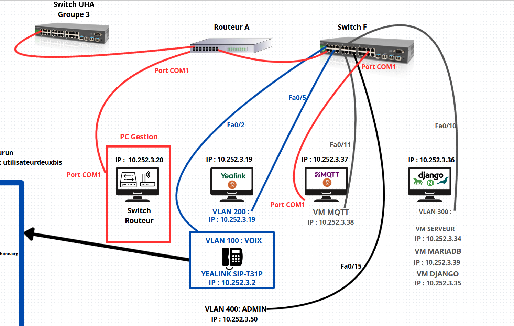
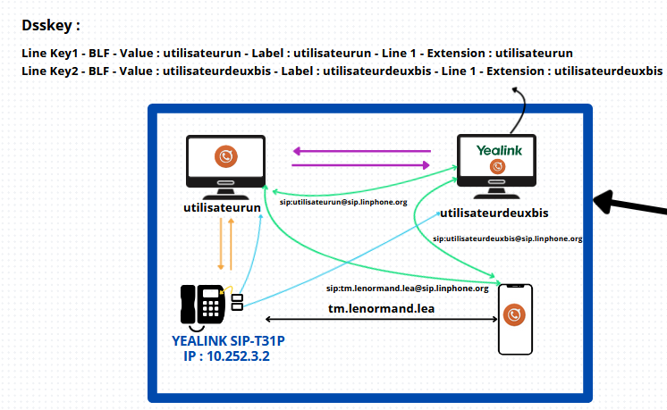
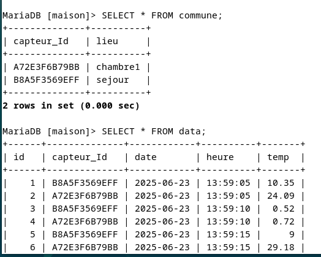
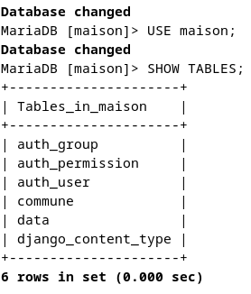

// en clair
Un réseau d'entreprise complet, construit et protégé de bout en bout, en autonomie : réseau, téléphonie, collecte de capteurs et site web.
Contexte
- type
- SAÉ (situation d'apprentissage et d'évaluation) : un projet évalué qui mobilise plusieurs compétences
- année
- BUT 1, semestre 2
- compétences
- C1 Administrer, C2 Connecter, C3 Programmer
- organisation
- Travail individuel
Ce qui a été réalisé
Projet de fin d'année qui met en œuvre toutes les compétences acquises au fil de la première année. L'objectif : installer un petit réseau d'entreprise avec de la téléphonie, une partie administrateur, une partie utilisateur et une partie web.
J'ai travaillé en autonomie sur la construction et la sécurisation d'un réseau local complet. J'ai mis en place plusieurs VLAN (administration, développeurs, administrateurs et voix), configuré le routage inter-VLAN, et segmenté l'adressage IP pour que chaque groupe d'utilisateurs ait son propre sous-réseau, avec des masques adaptés à chaque usage, distribués via DHCP sur les sous-interfaces du routeur.
J'ai aussi déployé plusieurs services : un serveur FTP sécurisé, Rsyslog, Nginx, Gunicorn et une base de données MariaDB. Côté sécurité, j'ai appliqué des ACL sur le routeur et le commutateur pour filtrer précisément les flux autorisés, sécurisé les ports des commutateurs avec port-security, et configuré l'isolation des VLAN pour limiter les risques d'intrusion.
Le projet réunit quatre parties distinctes, détaillées plus bas : le réseau, la téléphonie, la collecte MQTT et le service web.
Réseau
Pour la partie réseau, j'ai entièrement conçu et simulé une architecture d'entreprise sur de vraies machines physiques, en créant plusieurs VLAN pour bien séparer les différents groupes d'utilisateurs (administration, développeurs, administrateurs, voix). J'ai centralisé la gestion des VLAN sur le commutateur principal, déplacé le VLAN natif pour plus de sécurité, et mis en place le routage inter-VLAN directement sur le routeur.
J'ai aussi segmenté tout l'adressage IP pour que chaque groupe ait son propre sous-réseau, en réservant des plages spécifiques pour chaque usage (VLAN, production, interconnexion). Pour garantir la haute disponibilité, j'ai configuré le spanning-tree et l'équilibrage de charge sur les liens entre commutateurs. Enfin, j'ai appliqué des règles de sécurité : ACL sur les commutateurs et sur le routeur pour filtrer les flux, tout en assurant l'accès au DHCP et aux services essentiels.

Téléphonie
Pour la partie téléphonie, j'ai installé sur deux clients Windows du VLAN Utilisateurs le logiciel Linphone, avec deux comptes pour que les deux machines puissent dialoguer. J'ai attribué une adresse IP à un téléphone fixe via DHCP dans le VLAN Voix, pour isoler le trafic téléphonique du reste du réseau. Ce téléphone a aussi reçu un compte Linphone pour dialoguer. Cette partie a été la plus rapide à réaliser.

Collecte MQTT
Pour la collecte de données, j'ai utilisé le protocole MQTT pour faire remonter en temps réel les mesures des capteurs vers mon application. J'ai développé un script Python basé sur la bibliothèque Paho MQTT, qui écoute les messages publiés sur un sujet (topic) dédié. Chaque message reçu est analysé, formaté puis inséré dans la base MariaDB.
J'ai aussi prévu la gestion des déconnexions : si la base est indisponible, les messages sont mis en file d'attente et réinjectés dès que la connexion revient, ce qui garantit qu'aucune donnée n'est perdue. Ce système permet de suivre l'état des capteurs en continu, même en cas de coupure réseau ou de maintenance sur la base.
Script Python, Paho MQTT, insertion MariaDB, gestion de file d'attente. Le script est téléchargeable dans la section « Fichiers et liens ».
Service web et base de données
Côté base de données et service web, j'ai mis en place une base MariaDB pour stocker toutes les données des capteurs et les informations sur les lieux. J'ai développé une application web avec Django pour visualiser et filtrer les mesures (par capteur, par date, par pièce) et générer des graphiques interactifs avec Chart.js.
L'application permet aussi de modifier les informations sur les capteurs et d'administrer les données facilement. J'ai configuré Nginx et Gunicorn pour servir l'application à la racine du domaine, avec gestion des fichiers statiques et sécurité des accès. Toute l'intégration entre la collecte MQTT, la base et le site web est automatisée, ce qui rend l'ensemble fluide et simple à utiliser.


Conclusion
Tout au long de ce projet, j'ai vraiment consolidé mes compétences techniques en réseaux et en administration système. J'ai appris à concevoir une architecture réseau complète, à configurer et dépanner des commutateurs Cisco (y compris le protocole Spanning Tree et le port mirroring), à utiliser PuTTY pour l'accès distant sécurisé et la gestion des équipements en ligne de commande, et à diagnostiquer les problèmes de connectivité VLAN avec des outils comme ping et la surveillance réseau.
J'ai aussi automatisé la collecte et le traitement des données avec MQTT et MariaDB, et développé une interface web sous Django pour visualiser les données en temps réel. Sur la partie sécurité, j'ai mis en place des ACL et segmenté finement le réseau avec des VLAN adaptés à chaque usage. Enfin, j'ai pu configurer un service avancé comme la téléphonie sur IP, ce qui m'a permis de toucher à l'intégration de plusieurs briques d'un système d'information d'entreprise.
Ce projet m'a donné une vision globale et concrète des métiers du réseau et des télécommunications, et m'a permis de me préparer à aller plus loin dans ce domaine.
Difficultés rencontrées
[À COMPLÉTER : une difficulté concrète rencontrée pendant ce projet, et comment tu l'as résolue]
Ce que j'ai appris
C'était le projet le plus difficile de la première année, car il demandait tout en même temps : réseau, programmation et administration, qui devaient fonctionner ensemble.
J'ai utilisé VLAN, routage, DNS, DHCP et ACL côté réseau, Django et Nginx côté web, ainsi que MQTT et Arduino pour la partie objets connectés. J'ai aussi travaillé sur le port mirroring, les journaux serveur et les liens redondants.
Plus qu'une compétence en particulier, ce projet m'a appris à gérer la complexité et à garder la vision d'ensemble tout en réglant des problèmes à tous les niveaux.